作品集 / original
山水风光。
山峦、云雾、湖泊与路上的片刻。
← 首页18 PHOTOGRAPHS

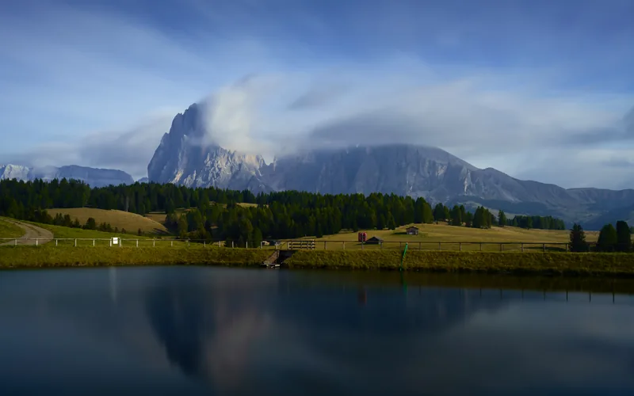
ISO 64 · 0.6 秒 · f/11 · 35 mm
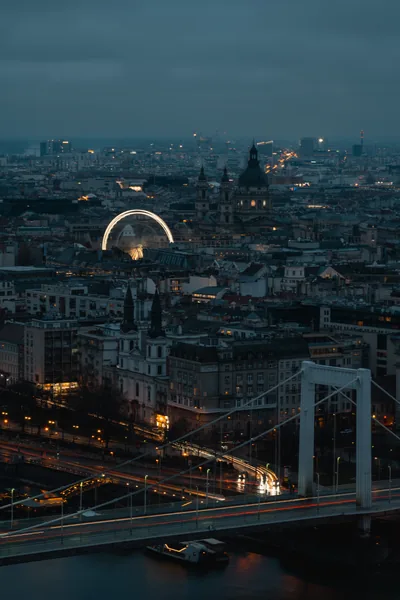
拍摄参数未保留
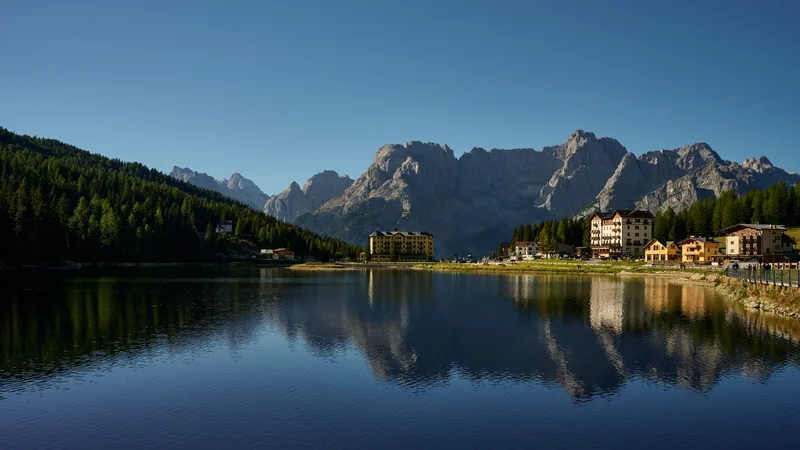
ISO 64 · 1/200 秒 · f/8 · 36 mm
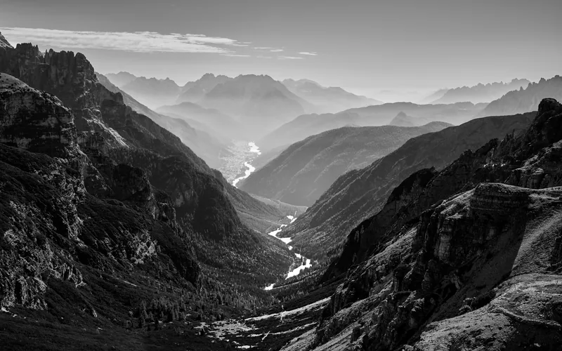
ISO 64 · 1/125 秒 · f/8 · 34 mm
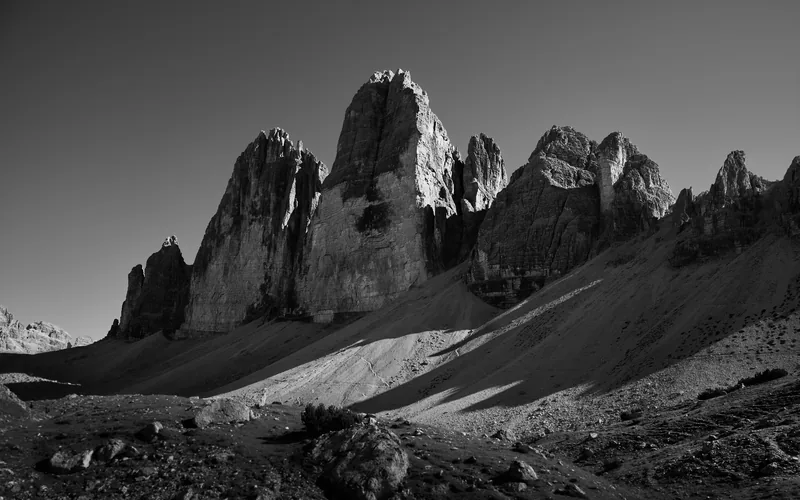
ISO 64 · 1/125 秒 · f/8 · 24 mm
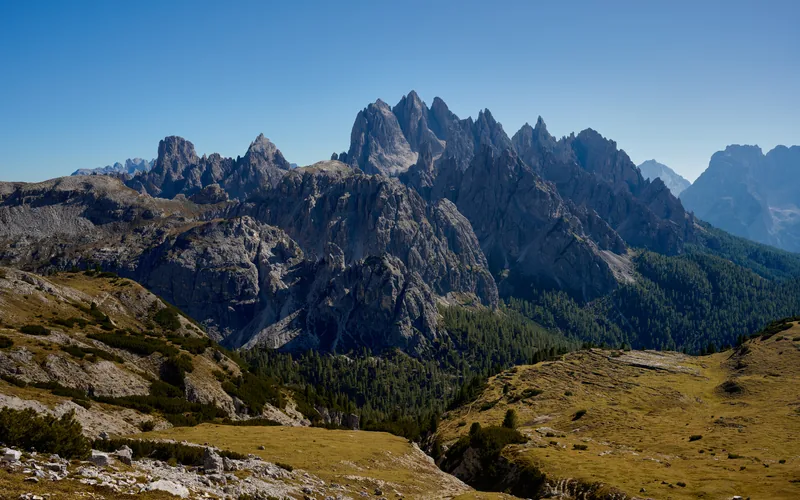
ISO 64 · 1/160 秒 · f/8 · 35 mm
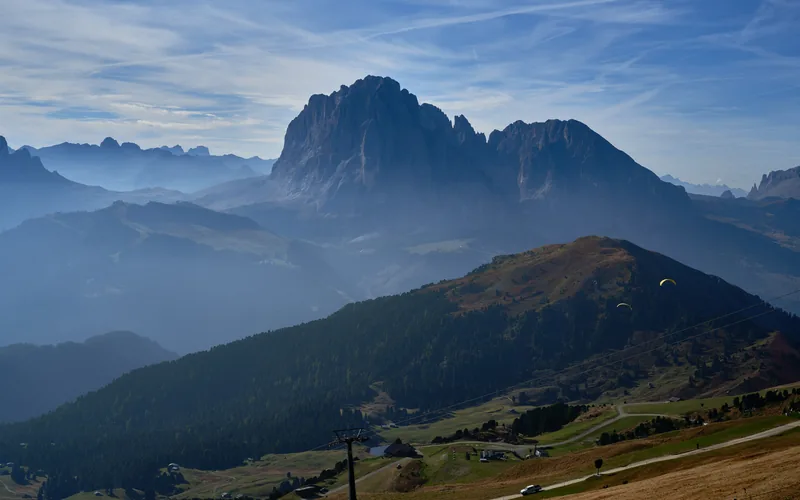
ISO 64 · 1/500 秒 · f/8 · 46 mm
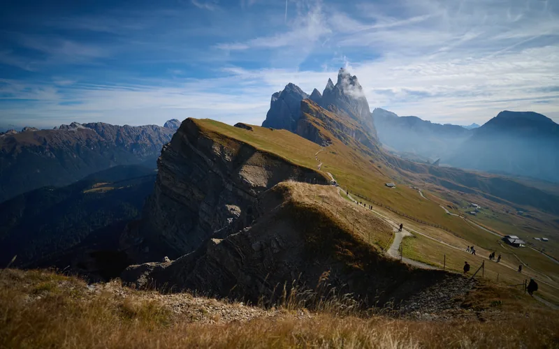
ISO 64 · 1/4000 秒 · f/1.8 · 16 mm
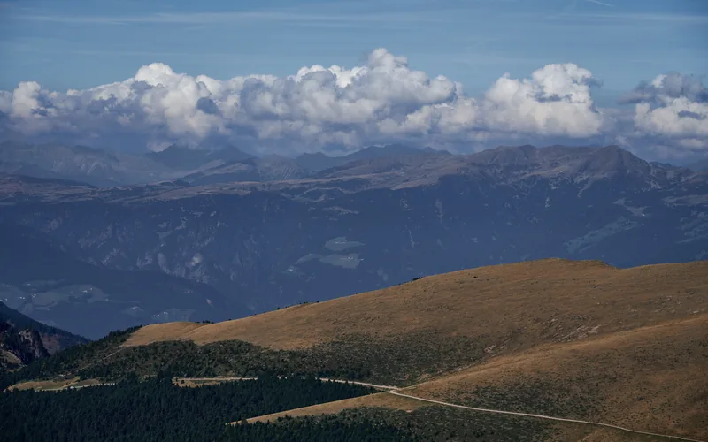
ISO 64 · 1/500 秒 · f/8 · 100 mm
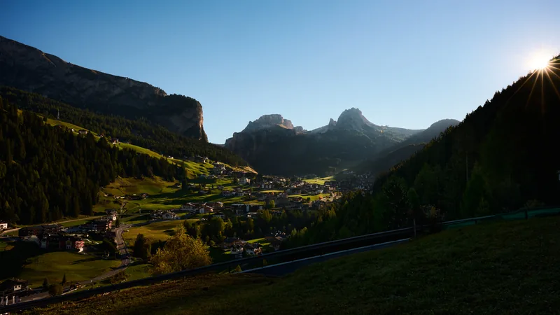
ISO 64 · 1/30 秒 · f/16 · 24 mm
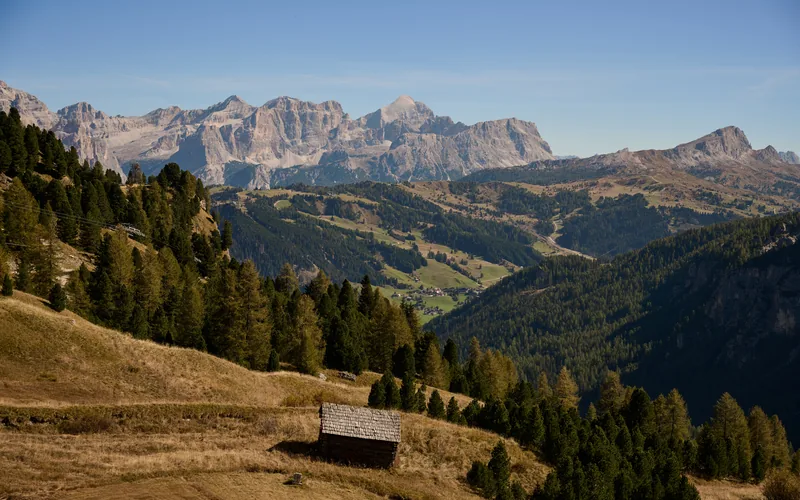
ISO 64 · 1/320 秒 · f/6.3 · 60 mm
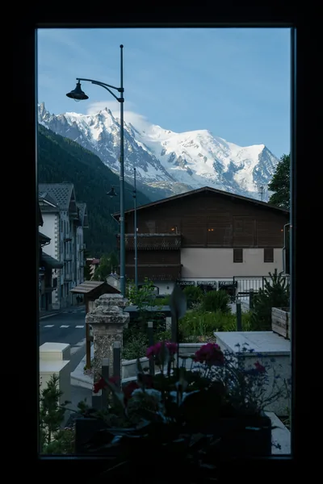
拍摄参数未保留
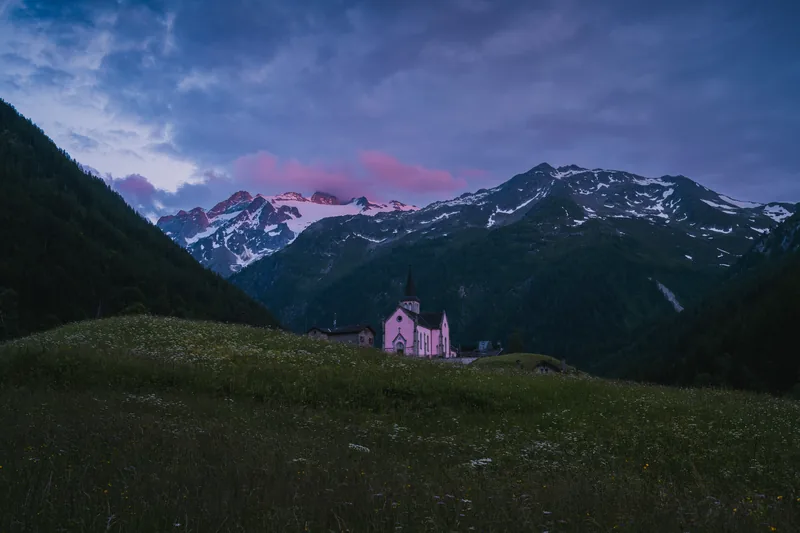
拍摄参数未保留
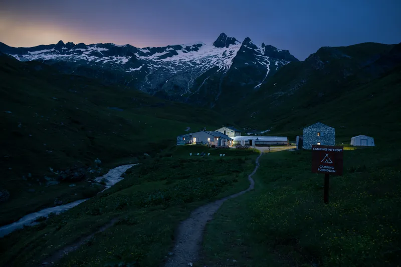
拍摄参数未保留
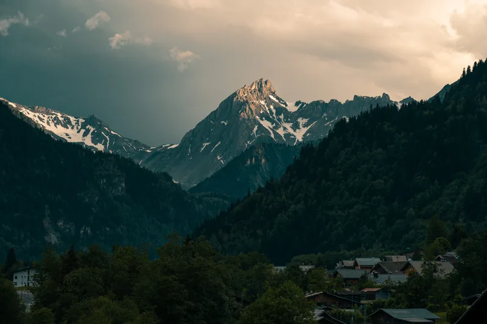
拍摄参数未保留 ISO 64 · 1/13 秒 · f/5.6 · 67 mm 拍摄参数未保留


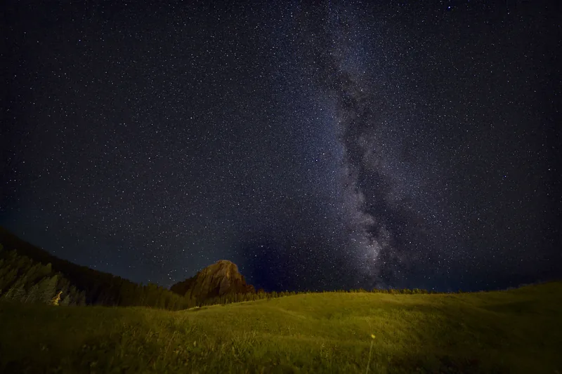
ISO 3200 · 200 秒 · f/1.8 · 16 mm